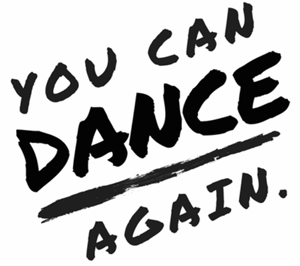

past performance |
|||
| 
You Can Dance Again: Summer Showcase by Jess Grippo showtimes & tickets:July 26 @ 7:30PM You Can Dance Again is a celebration based on the belief that dancing is a radical act of self-invention: a way to access the power in our bodies and harness it to transform our own lives and the world around us. You're invited to our Summer Showcase to activate the dance within you, witness inspiring performances, discover your unique creative energy and connect with a community of inspiring people. This event, is designed to give you the tools and inspiration you need to integrate dance into your life...in your own way. What does that mean? It means you can dance again. In the body you're in right now. Even if it's been a really long time. Even if you're way too busy. Because dancing is for everyone. Our intention is that you leave feeling both inspired and empowered to bring more of your creative expression into your life and to dance through all the challenges that come up along the way. |
upcoming performances |
|||
 |
|||
| EVQ Film Festival 2018 August 20-25 |
|||
performance archives |
|||
| 2018 | 2017 | 2016 | 2015 |
| 2014 | 2013 | 2012 | 2011 |
| 2010 | 2009 | 2008 | 2007 |